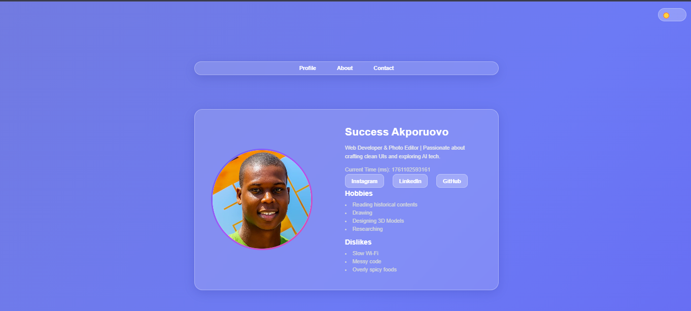
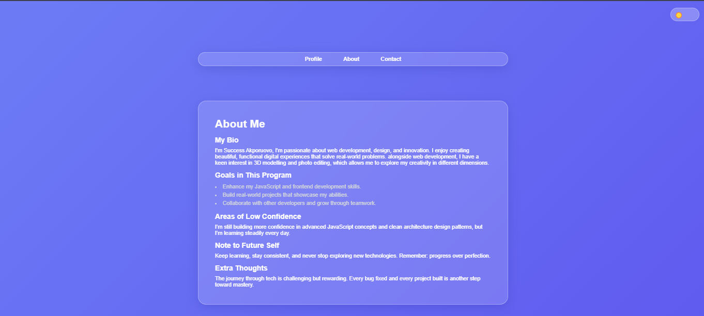
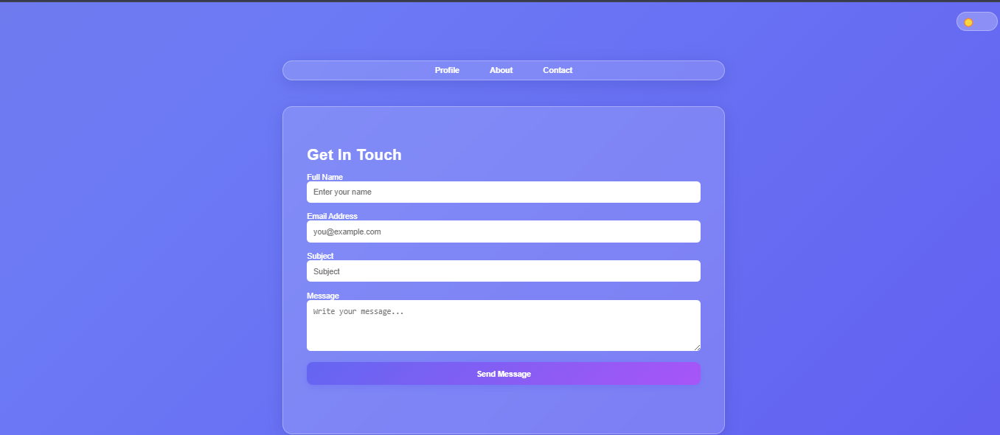
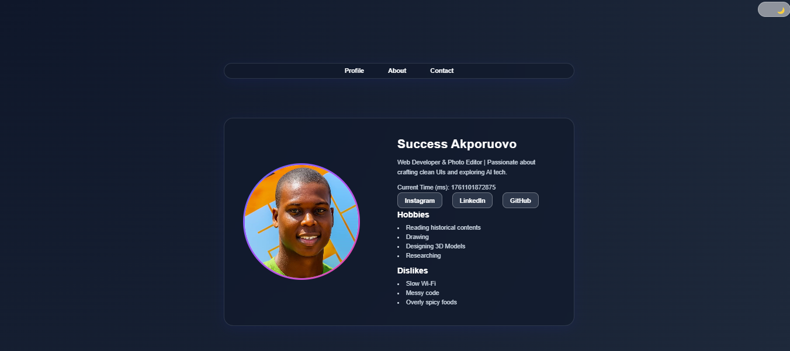
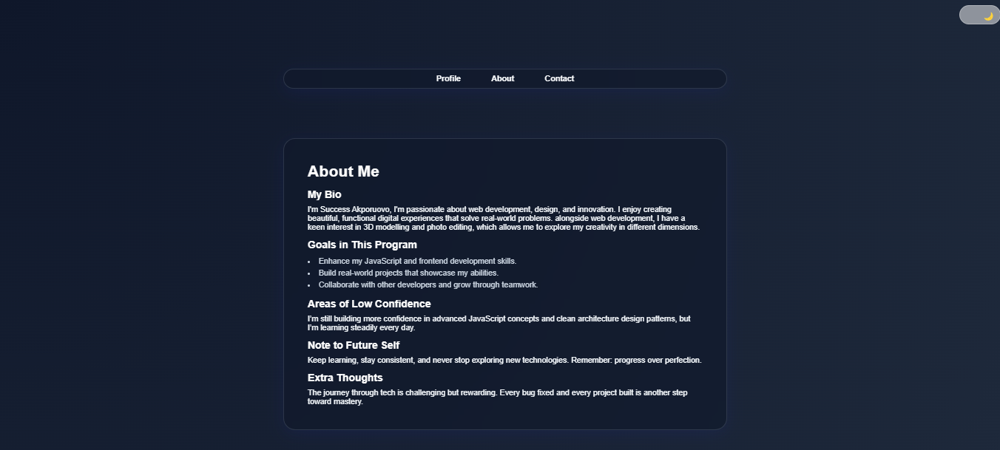
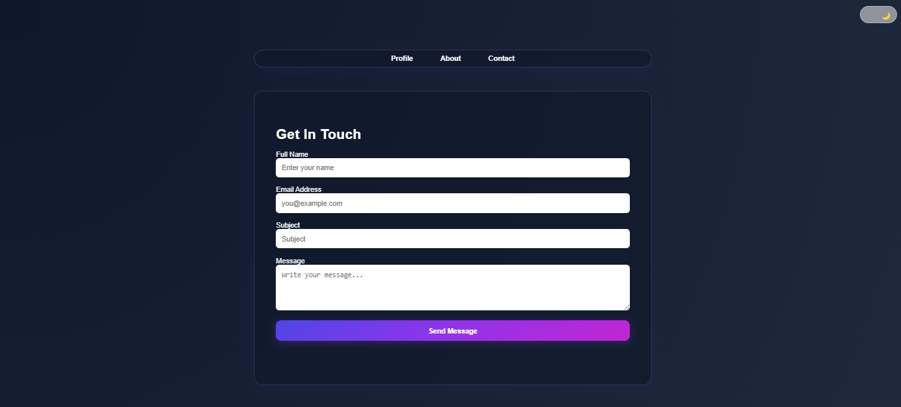

My Projects
Responsive Profile Card
I built a personal profile page using vanilla HTML, CSS and JavaScript. The page is fully responsive, adjusting smoothly across mobile, tablet, and desktop screens. It featured a live clock in milliseconds, a light/dark mode toggle and a glass-morphism UI. This project helped me understand media queries, layout responsiveness, and how to write clean, maintainable CSS for adaptive design.
Autorent Website
I recreated a car dealership website using only HTML and CSS, focusing on structure, design accuracy and responsiveness. This project strengthened my understanding of flexbox and grid layouts, and gave me hands-on experience with replicating professional web layouts.
E-commerce Website
I designed a modern landing page for an e-commerce website using HTML and CSS. The goal was to create a visually appealing, user-friendly interface that highlights products effectively. Through this project, I practiced layout organization, typography, and UI consistency.
Skills
I'm building a strong foundation in both development and design. My current skill set includes:
Technical Skills:
- HTML - Writing clean and accessible code
- CSS - Creating responsive and cool layouts
- JavaScript - Currently learning interactivity, DOM manipulation and basic logic
- C Programming - Exploring programming fundamentals
- Git & GitHub - Basic version control and project collaboration
Creative Skills:
- Photo Editing - Skilled in retouching and color correction using editing tools like Adobe LightRoom
Soft Skills:
- Attention to detail
- Consistency and continuous learning
My Goals
- To become a skilled and well-rounded software engineer capable of building impactful digital solutions.
- To master web development, advancing from HTML and CSS to JavaScript, React, and modern frontend tools.
- To explore and grow in software engineering and AI/ML, applying technology to solve real-world problems.
- To continuously improve my creativity through photo editing
- To contribute to open-source projects and collaborate with other developers worldwide.
My Favorite Web technologies/tools
- VS Code
- Git & GitHub
- Chrome Devtools
- Adobe LightRoom
- Netlify
Featured Project
A responsive profile card built with HTML, CSS and JavaScript, featuring a live clock and a light/dark mode toggle.
Light mode version
  Dark mode version
  Live preview: My-Profile-Card